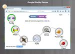
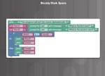
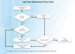
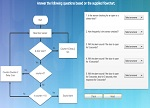
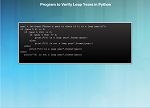

покажчик курсу
недавні сторінки
- сторінка 2.2.1.1Визначення створення прототипу
- сторінка 2.1.2.3Packet Tracer. Миготіння світлодіодним індикатором з допомогою Blockly
- сторінка 2.1.2.2ігри Blockly
- сторінка 2.1.2.1Що таке Blockly?
- сторінка 2.1.1.2Блок-схеми
- сторінка 2.1.1.1Дотримуйтесь блок-схемі.
- сторінка 2.1.1.3Системне ПО, прикладні програми та мови програмування
- сторінка 2.0.1.1Глава 2. Всі навколо стає програмованим
- сторінка 1.3.1.1огляд
- сторінка 1.2.1.1Що таке Інтернет речей?
Закладки
вибрати фон
Довідка
Developer Tools